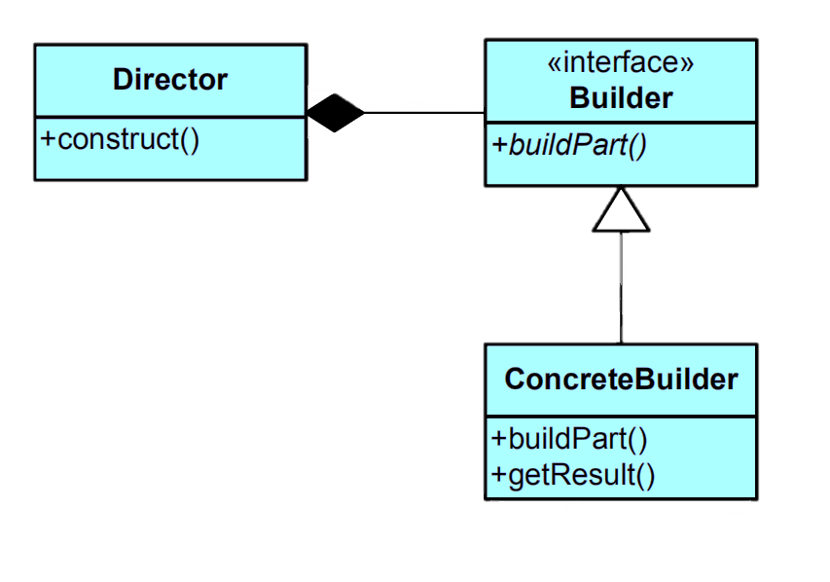

Imagine you are building a system for constructing different types of computer systems. Each computer consists of a CPU, memory, storage, and possibly additional features. You want to use the Builder pattern to create various types of computers while keeping the construction process consistent.Learn more.
Key Characteristics
Key characteristics of the Builder pattern include:
Separation of Concerns:The pattern separates the construction logic from the actual representation of the object being built, allowing for more flexible construction processes.
Stepwise Construction:The builder pattern involves a stepwise approach to constructing an object. Each step corresponds to building a part of the object.
Common Interface:The pattern often uses a common interface for different builders. This interface typically declares methods for constructing each part of the object.
Director (Optional): A director class may be used to guide the step-by-step construction process, invoking the builder's methods in a specific order.
Variety of Representations:The builder pattern allows different concrete builders to create objects with different structures or features while using the same construction process.
Class Diagram

Example
Imagine you are building a system for constructing different types of computer systems. Each computer consists of a CPU, memory, storage, and possibly additional features. You want to use the Builder pattern to create various types of computers while keeping the construction process consistent.